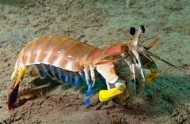
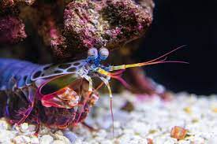
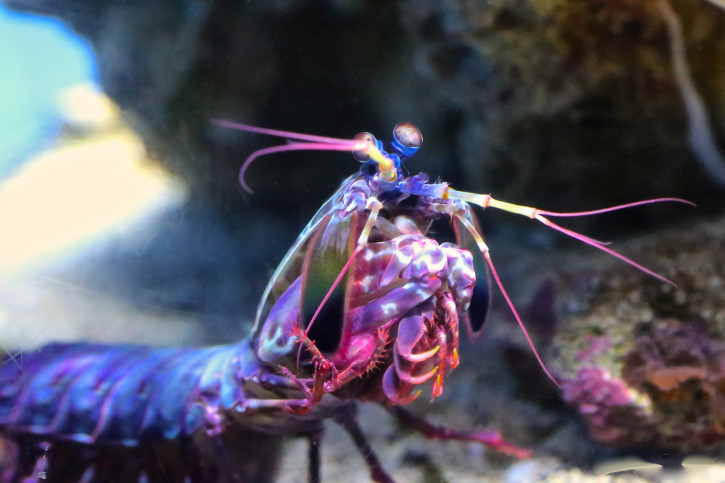
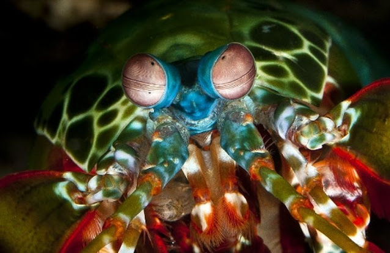

<!DOCTYPE html>
<html lang="en"></html>

<head>
    <meta name="viewport" content="width=device-width">
    <meta name="description" content="Curiosidade sobre stomatopoda">
    <meta charset="UTF-8" />
    <title>Stomatopoda ou lacraias-do-mar</title>
    <link rel="stylesheet" href="index.css">
</head>

<body>
    <!--insira os elementos aqui-->
    <header>
        <h1>Soco a 80km/h: Conheça o Stomatopoda.</h1>
        <nav class="link">
            <ul>
                <li class="lin"> Página inicial</li>
                <li class="lin">Sobre</li>
                <li class="lin">Contato</li>
            </ul>
        </nav>
    </header>
    <article>
        <h2>Fatos sobre o Stomatopoda</h2>
        
        <p id="cientifico"><em>Odontodactylus scyllarus (nome científico)</em>.</p>

        <section>
            <h3>Informações gerais</h3>
            <p class="inform">
              
                   <p class="inform"> Reino: Animalia.</p>
                   <p class="inform"> Filo: Arthropoda.</p>
                   <p class="inform"> Subfilo: Crustacea.</p>
                   <p class="inform"> Classe: Malacostraca.</p>
                   <p class="inform"> Subclasse: Hoplocarida.</p>
                    <p class="inform"> Ordem: Stomatopoda.</p>
              
            </p>
        </section>
        <section>
            <h3>Onde habitam</h3>
            
            <p class="texto"> Conhecida no Brasil como <strong>(inicio de cor vemelha) tamarutacas ou de lacraias-do-mar (fim da cor vermelha)</strong>, 
                os estomatópodes compõe uma ordem de crustáceos
                marinhos criptobentônicos que habitam águas tropicais e subtropicais.</p>
        </section>
        <section>
            <h3>Alimentação</h3>
            <p class="texto">
                É um animal exclusivamente <strong>(inicio de cor vemelha) carnívoro (fim da cor vermelha)</strong>, alimenta-se de caranguejos, moluscos,
                camarões e até mesmo de outros estomatópodes.
            </p>
        </section>
        <section>
            <h3>Grupos existentes</h3>
            
            <p class="texto">Pode ser classificado em dois grupos: os que têm ataque perfurador (spearers) e esmagador (smashers).
                Com isso, os esmagadores são considerados um dos animais mais fortes e velozes do planeta, por terem
                um ataque rápido como uma bala e forte como um touro.
                Um soco desse animal é capaz de atingir a <strong> (inicio de cor vemelha)  velocidade de 720 km/h (fim da cor vermelha)</strong>, o que equivale a um
                tiro calibre .22.
                Como se não bastante a velocidade, o golpe tem uma <strong>(inicio de cor vemelha) força de impacto de 80 (fim da cor vermelha)</strong>.
            </p>
        </section>
        <section>
            <h3>Visão</h3>
            
            <p class="texto">Têm os olhos mais complexos do reino animal e é <strong>(inicio de cor vemelha) de ver cores invisíveis a vários outros animais,
                do ultravioleta ao infravermelho. (fim da cor vermelha)</strong>
                Conseguem enxergar até 16 cores primárias em razão de possuírem 16 pigmentos diferentes em sua retina.
            </p>
        </section>
    <aside>
        <nav>
            <h3>Referências</h3>
            <ul>
                <li class="ref"><a rel="stylesheet" href="https://pt.wikipedia.org/wiki/Stomatopoda" target="_blank" alt="Site onde foi retirad a informação sobre o crustáceo acima">wikipedia.org (abrirá em nova janela)</a></li>
                <li class="ref"><a rel="stylesheet" href="https://www.aquaa3.com.br/curiosidades-camarao-mantis/"target="_blank" alt="Site onde foi retirad a informação sobre o crustáceo acima">aquaa3.com.br (abrirá em nova janela)</a></li>
            </ul>
        </nav>
    </aside>
    </article>
    <footer id="footer">
        <p>Conteúdo compilado por Nathália Andrade, 2022.</p>
    </footer>
</body>

</html>